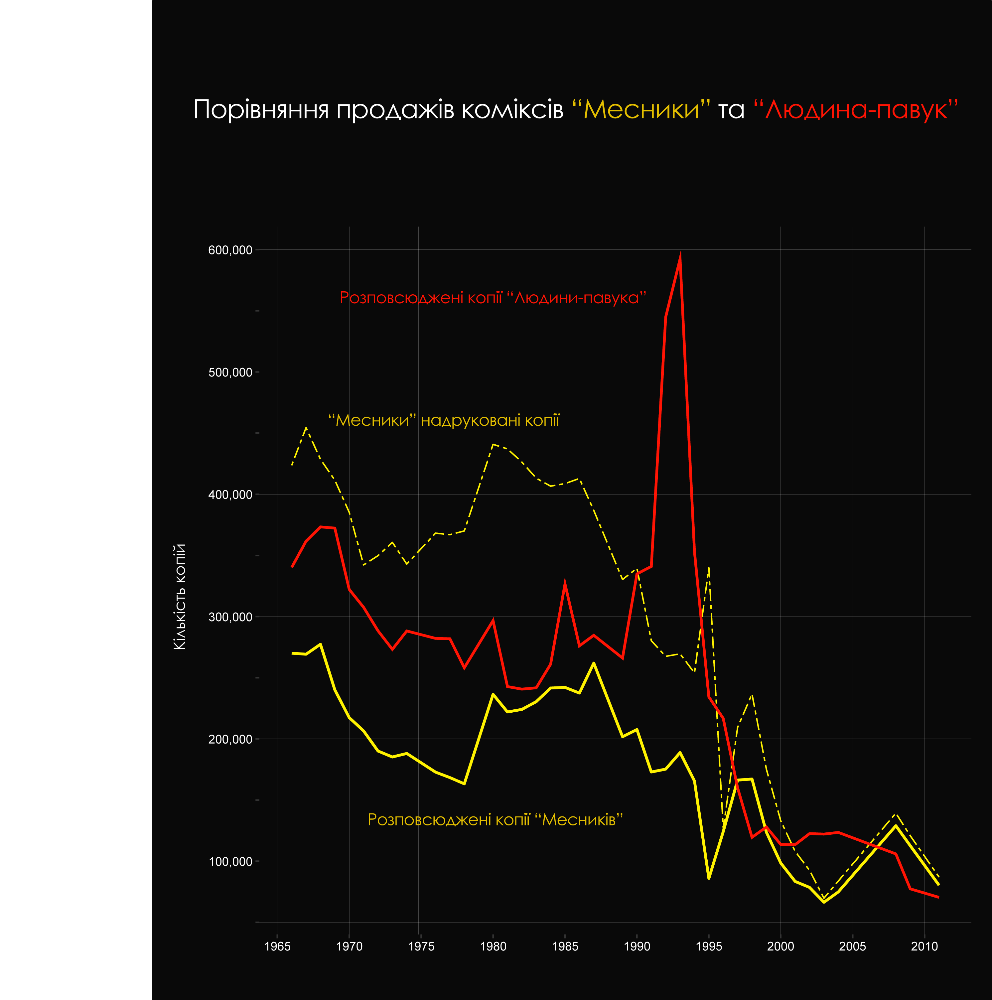

Хто бодай би раз не чув про Залізну Людину, Капітана Америку, Тора чи Халка? Мабуть, таких людей небагато, адже на сьогодні фільми базовані на коміксах є одними з найпопулярніших та найприбутковіших кінострічок Голлівуду. Хоча ще дванадцять років тому творці першого кінокомікса про Тоні Старка – більш відомого як Залізна Людина – затамувавши подих, чекали «вистрілить» він, чи ні. І він таки «вистрілив», розрісшись до повноцінного кінематографічного всесвіту Марвел (Marvel Cinematic Universe). Та сьогодні мова піде про іншого героя золотої трійки Месників – бога грому Тора.
Червоний плащ, довге блондинисте волосся, м'язисте тіло, а у правій руці – Мйольнір, молот, що іскрить блискавками - саме таким в уяві більшості з нас постає Тор, скандинавський бог грому й за сумісництвом – Месник. Адже більшість із нас пам'ятає власне кінематографічний образ персонажа, втілений у життя Крісом Хемсвортом. Однак не кожен задумується про першоджерело походження бога-друга людства. І мова, звісно ж, не про комікси.
Тор Одінсон у міфах
Першою, й найбільш помітною серед відмінностей між Тором у скандинавських міфах й Тором у коміксах та фільмах є те, що він аж ніяк не світловолосий. Насправді бог грому та блискавки у міфах зображується рудоволосим здорованем, вдягнутим в цупкі шкіряні одежини і є більше схожим на вікінга. Улюбленим його заняттям були полювання на велетнів, тож Тор часто любив вирушати в тривалі походи. Ще однією цікавою деталлю є борода Тора – він ніколи з нею не розлучався. Вона, у міфах – символ мужності та сили, про що бог не раз сам казав, й сильно нарікав, коли йому довелося її прибрати, щоб мати змогу потрапити до ворожих володінь притворившись своєю матір'ю.
Другою відмінністю є канонічний молот Мйольнір. Перше за все, варто сказати, що у фільмах та коміксах він дещо гіперболізований, адже у міфах Мйольнір нагадує радше звичний для нас молоток. Хоч і незмінно залишається такою ж потужною зброєю й, навіть, сильнішою. Але це не така вже й важлива деталь, як, наприклад, те, що молот може виконувати свої функції лише якщо його власник має на руках спеціальні рукавиці, завдяки котрим можна втримати в руках розжарену зброю. А також бог повинен бути підперезаний магічним поясом, який посилює його здібності, роблячи Тора практично непереможним.
Третя відмінність (і вона теж про молот) – Тор не вміє літати за допомогою Мйольніра. Ми звикли до цієї суперздібності бога, однак для того, щоб перелетіти з одного місця в інше, у міфах, Тор завжди використовував колісницю запряжену двома козлами. І це ще не найдивніше. Іноді, коли богові не було чим попоїсти, він з’їдав їх (важливо було не рухати їхні кістки) а потім… відновлював та оживляв за допомогою Мйольніра. Так, цей магічний молот вмів ще й воскрешати.
Насправді розбіжностей між оригіналом та адаптованою версією назбирається чимало – ось, навіть, у міжособистісних стосунках Тора з батьком, братом, дружиною Сіф, котра у фільмах є просто бойовою побратимкою та другом дитинства. Однак незмінним залишається імідж улюбленця людства, який підтримується і в фільмах. У міфах Тор був таким собі охоронцем людей, завжди приймав їхню сторону у сутичках з іншими богами, був вагомою частиною їхнього життя, а вони – його. У фільмах же Тор є кумиром мільйонів і неабияк популярним серед дівчат та жінок.
Тор Одінсон у коміксах та фільмах
Варто зауважити, що зараз ми живемо в епоху «марвелівського ренесансу». Переживши декілька епох відродження – як от Золоту (1939–1949), Срібну (1956 – 1970) та Бронзову (1970 – 1984) – комікси здобули найбільшої популярності сьогодні власне у формі кіно.
Нижче можна побачити як падала популярність друкованих коміксів про Месників та Людину-павука з роками, а власне – з приходом інтернету. Що цікаво, комік-буки про Людину-павука завжди були найбільш продаваними серед інших серій.

Повертаючись до теми нашої розмови, цікаво, що «божественне» походження Тора та інших асгардських персонажів в обох варіантах – у коміксах та кінематографі - пояснюють нічим іншим, як інопланетним втручанням. Так, на Землі 616 (тобто на нашій) їх вважають інопланетянами, які час від часу приходили й продовжують приходит на Землю. Древні люди, не маючи змоги (й знань) якось по-інакшому пояснити суперздібності «інопланетян», записали їх до рангу богів і стали на них молитися, таким чином творячи древні міфи та культи.
Йдемо далі і повертаємося до Тора з коміксів та фільмів. Разючих відмінностей між цими двома версіями одного персонажа не так вже й багато. Найбільше їх, мабуть, в самих міжособистісних стосунках Тора з іншими персонажами, і, звісно ж, адаптованому до людських пропорцій, тілі бога грому. А також в одязі, який у кіно виглядав би доволі комічно.
Однією з важливих змін є історія потрапляння на Землю бога грому. Власне, у фільмах починається все близько до того, як воно є у коміксах – самовпевнений, дещо зверхній та звиклий до уваги Тор гнівить свого батька і той, щоб навчити свого сина людськості та манер, й викорінити з нього пиху, вирішує відправити його на Землю (у Мідгард). Щоправда у коміксах він не лише виганяє його з Асгарду, але й позбавляє бога грому пам’яті, розлучає його з Мйольніром, готує для Тора дещо покалічене людське тіло і вселяє його в нього. У фільмах перетворення персонажа не триває так довго, як у канонічній історії, адже в ній Тор довгий час не пам’ятав хто він, працював звичайним лікарем з іменем Дональд Блейк (хоча й у цій сфері зумів добитися висот) і закохався у Джейн Фостер, медсестру з лікарні, котра у фільмах, до речі, є науковцем.
Варто сказати, що Тор дуже комфортно себе почував серед людей не лише тому, що й у міфах він був «другом людства». Але й тому, що у комікс-всесвіті його матір’ю була богиня Землі Гея. Тож навіть коли Одін повернув синові пам’ять і дозволив повернутися додому, Тор, хоч таки й бував знову в Асгарді, залишився працювати земним лікарем та допомагати людям у складі Месників. Щоправда у фільмах він приєднався до них набагато пізніше, ніж у коміксах і лікарем не був. Загалом комікс-версія та кінематографічна версія Тора є доволі схожими, якщо не брати надто до уваги сюжетні арки, які, звісно ж, не вийшло б зобразити у кіно, бо тоді для цього потрібно робити цілий серіал.
Тор безумовно залишається одним з найпопулярніших персонажів коміксів Марвел (та й усієї комікс-індустрії загалом) і є чудовим прикладом того, як поп-культура може дати нове квітуче життя міфам, історії та фольклорним байкам.